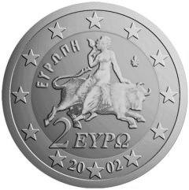
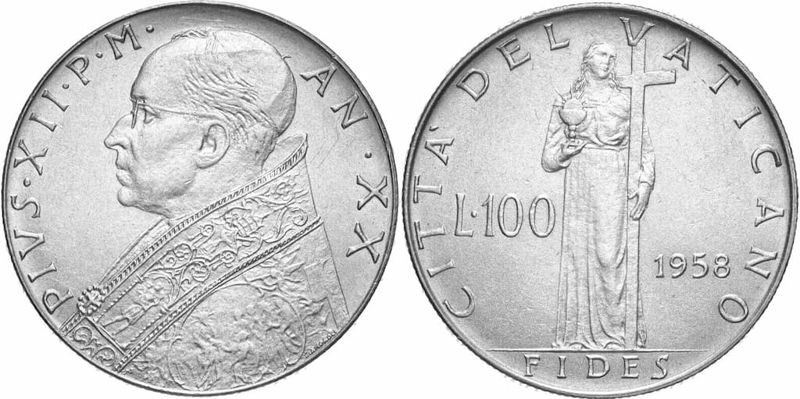
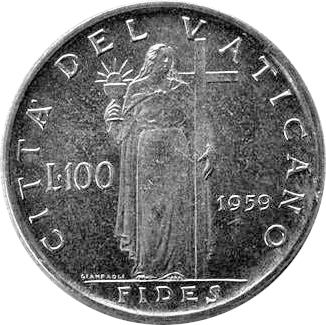
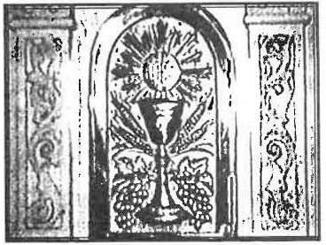
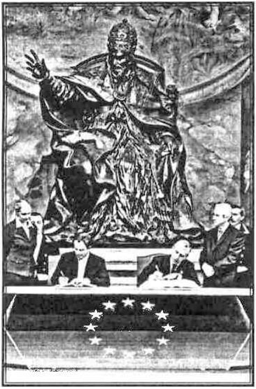
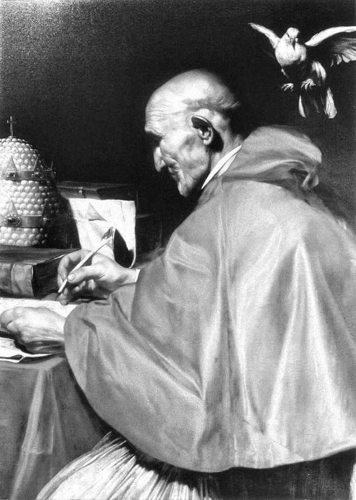

Precum se vede, aici avem moneda de doi euro din Grecia, înfățișînd răpirea domnișoarei Europa de către taurul Zeus. Să ne amintim legenda, fiindcă, precum ne-a tot plictisit „tovarășa” în clasele mici, „orice legendă are un sîmbure de adevăr”. Întîi de toate, să zicem că etimologia numelui de „Europa” nu se cunoaște, unii zicînd că e semitică, alții că e celtică sau grecească. Ce se știe e că numele se află pentru întîia oară în mitologia elină, Hesiod zicînd (în veacul al VIII-lea înainte de Hristos) că Europa era ori una din cele trei mii de Oceanide1, ori fiica regelui Tyrului, răpită de Zeus, această poveste fiind și cea mai cunoscută. Așadar, s-a întîmplat că Zeus - marele tartor al Elinilor2 - a văzut-o pe fată pe cînd aceasta culegea flori (sic!) și, nestăpînit cum era de felul său, s-a aprins de dorință curvească pentru ea. Și ce a făcut? S-a schimbat într-un frumos taur alb și, luînd-o pe grumaz (ea ținîndu-se de coarnele lui), a înotat peste mare, ducînd-o în insula Creta. Iar acolo s-au împreunat - precum ne putem închipui - și prințesa i-a născut pe Minos, Sarpedon și Rhadamante.
Dar povestea cu tauri albi nu se termină aici. Căci, înainte de a dobîndi tronul Cretei, Minos a avut de luptat cu frații săi pentru dreptul la stăpînire și s-a rugat lui Poseidon (zeul apelor, unchiul său după tată, cum ar veni) să-i trimită un semn că zeii îi binecuvîntau domnia. Ei, și unchiul i-a trimis un frumos taur alb ca zăpada, „care s-a ivit din apa mării (precum tatăl lui Minos cu ani în urmă). Minos ar fi trebuit să jertfească dobitocul, arătîndu-și astfel supunerea către „dumnezeii” cerului și ai pămîntului, dar nu a făcut așa, ci l-a păstrat pentru sine. Cînd Poseidon a aflat de lipsa de evlavie a nepotului, a făcut ca Pasipha, femeia acestuia, să se îndrăgostească nebunește de taur. Iar aceasta l-a pus pe Daedalus, vestitul arhitect, să-i facă o vacă din lemn goală pe dinăuntru. Și, intrînd în forma aceea dobitocească, femeia s-a împreunat în chip dobitocesc cu taurul, ca și soacra sa pe vremuri. Iar din împreunare s-a zămislit monstrul numit „Minotaur” „taurul lui Minos”, o jivină cu cap și coadă de taur și trup de om.
Ce a urmat, se știe: Minotaurul a pricinuit atîtea rele pe insulă, încît Daedalus a trebuit să construiască pentru el, la cererea lui Minos, labirintul, în care a fost închis. Acolo, el primea spre mîncare tributul adus Cretei de către Atena, adică șapte tineri și șapte fecioare în fiecare an. Asta pînă cînd a fost ucis de eroul Tezeu, povățuit de firul Ariadnei, fiica lui Minos și ajutat de sabia magică dată tot de ea.
Lăsînd de-o parte înfricoșăroarea și scîrbavnica poveste, să ne gîndim că toate noroadele păgîne - începînd cu Babilonienii și cu Egiptenii, cei dintîi închinători la idoli, adică la chipurile diavolilor - au avut drept „dumnezeu” cîte un taur: primii pe Baal-Moloch, iar cei de-al doilea pe Apis. Iar de la ei, animalul cornut a fost cinstit de toți ceilalți păgini, ba chiar și de norodul ales al Iudeilor, atunci cînd acesta s-a smintit în pustie și i-a cerut lui Aaron să le facă vițelul de aur3. Și pe cine închipuie fiara cornută și copitată, desfrînată și sălbatică? Știm prea-bine, din întîmplările trăite de Părinții Bisericii din pustie, aceia care au înfruntat duhurile necurate față către față: pe însuși diavolul cel mare, începătorul răutății, vrăjmașul lui Dumnezeu și al oamenilor. Iată așadar „mitul întemeietor” al „Europei”, împărăția zidită în vremile noastre de strănepoții Minotaurului.
Să ne întoarcem acum la gravura monedei de doi „euro” („euro” ce?). Aceasta reprezintă așadar o femeie ce șade pe spatele fiarei încornorate, alergînd în galop. Ceea ce ne aduce numaidecît în minte locul acela de la Apocalipsa 17:1-3:
„Apoi, a venit unul din cei șapte Îngeri care aveau cele șapte cupe, și a grăit către mine, zicînd: Vino să-ți arăt judecata curvei celei mari, care sălășluiește pe ape multe! Cu care au curvit împărații pămîntului, și cei care locuiesc pe pămînt s-au îmbătat de vinul curviei ei. Și m-a dus, cu duhul, în pustie, și am văzut o femeie șezînd pe o fiară roșie, plină cu nume de hulă, avînd șapte capete și zece coarne.”
Ca să înțelegem proorocia, avem neapărată trebuință de tîlcuirea Sfântului Andrei al Neochesariei, singura întemeiată și vrednică de crezare! (Căci toate celelalte sunt înșelări de ale ereticilor protestanți și nici în Ortodoxie nu se află o a doua.) Deci acest fericit purtător de Duh zice așa:
„Unii au înțeles că această «curvă» este Roma cea veche, care e zidită pe șapte dealuri. Iar prin cele «șapte capete ale fiarei» au înțeles șapte împărați mai fără de lege decît toți, care, de la Domițian și pînă la Dioclețian4 (sec. I-IV), au prigonit Biserica. Iar noi socotim că prin această desfrînată se înțelege împărăția pământească de obște, închipuită ca un singur trup. Sau, socotim să fie oarecare cetate ce va avea stăpînire prin venirea lui Antihrist. Pentru că Roma cea veche și-a pierdut stăpînia împărătească de multă vreme, [și ar putea fi vorba de ea] numai dacă am socoti că iarăși se va întoarce la ea stăpînirea cea de demult. Căci zice Apostolul: «Și femeia pe care ai văzut-o este cetatea cea mare, ce are stăpînire peste împărații pământului» (Apocalipsa 17:18).
«(…) și cei care locuiesc pe pămînt s-au îmbătat de vinul curviei ei.»/ Prin cetatea cea mare înțelegem toată cetatea sau mulțimea cea mare a oamenilor care hulesc, pentru beția sufletească, pentru desfrînare și pentru alte îndrăzniri. […] Și a văzut [cetatea] ca pe o femeie, pentru nebărbăția ei cea femeiască și pentru aplecarea spre păcat5. Iar șederea pe «fiara roșie» arată că se odihnește pe fapte rele, pe diavolul, care se bucură de omorâre și de vărsare de sînge.”
La acestea, cuviosul Averchie Taușev adaugă: „Alți tîlcuitori au văzut în această «desfrînată» Biserica cea necredincioasă lui Hristos, care se pleacă înaintea lui Antihrist, sau pe toți apostații6: acea parte a omenirii creștine care va fi în legături nemijlocite cu lumea păcatului, care o va sluji și va atîrna cu totul de cruda ei putere, care este puterea Fiarei, adică a Antihristului.”
Și, într-adevăr, Roma și-a recăpătat deja stăpînirea de demult: „împărații” lumii vin iarăși la Vatican și îngenunchează înaintea papei, precum am văzut că a făcut însuși „stăpînul universului”, președintele American, acum cîțiva ani. La fel, „marii preoți” ai „bisericilor” păgîne și diavolești (împreună cu ierarhi Ortodocși), cum am văzut la întîlnirile de la Asissi și Vatican.
„Curva cea mare a Babilonului”



Relieful de mai sus înfățișează o cupă (ciboria) din care iese ostia („biscuitul” papistașilor) în chipul soarelui (am arătat altădată că Biserica Romană se închină astrelor). Pe reversul monedei de alături (emisă de statul Vatican), vedem aceeași cupă în mîna unei Femei necunoscute — despletită, strînsă în talie, cu o mantie aruncată pe umeri (e bellissima, după gustul împătimiților) — și purtînd lejer o mare cruce). După tîlcuirea papistașilor, această donna ar trebui să fie „Credința”, adică Biserica Romană însăși, „singura păstrătoare a adevărului”, precum a întărit nu de mult papa Benedict. Cercetînd Scripturile, gravura cu pricina ne aduce aminte mai degrabă de „curva cea mare, Babilon”, pentru care se proorocește în Apocalipsă. Să citim deci iarăși de la capitolul 17 al cărții, împreună cu tîlcuirea aceluiași Sfînt Andrei al Neochesariei:
„«(stih 4) Și femeia era îmbrăcată în purpură și în stofă stacojie și împodobită cu aur, și cu pietre scumpe și cu mărgăritare, avînd în mînă un pahar de aur, plin de urîciune și de necurățiile curviei ei.»
«Îmbrăcată în purpură și în stofă stacojie (…)»/ Prin acestea, arată semnele stăpînirii peste toți. […] Iar prin «pahar», se arată dulceața băuturii faptelor ei cele viclene — precum zice cineva de Iov: «bînd batjocura ca apa» (Iov 34:7). Și paharul e de «aur», ca să arate prețuirea [ce se dă acelor răutăți] — spre a arăta că nu spre sațiu, ci spre setea pieirii ei urmează răutatea. De aceea, s-au înmulțit urîciunile ei, cu care este adăpată mulțimea cea iubitoare de păcate, care soarbe ca pe o băutură dulce îmbătarea păcatului cea urîtă și spurcăciunea curviei, care-l depărtează pe om de Dumnezeu.”
O frumoasă tîlcuire a acestui stih are și Sfîntul Ambrozie al Mediolanului:
„Purpura este ca sîngele — zice el — și roșii sînt hainele împăraților, arătînd puterea lumească a veacului7. Prin «sînge», arată însăși moartea. Prin veșmintele de purpură înțelegem și lucrurile necredincioșilor, care vor fi osîndiți la moarte veșnică. Și «femeia era (…) împodobită cu aur», arătînd că avea înțelepciunea veacului acestuia, care «este nebunie înaintea lui Dumnezeu» (1 Corinteni 3:19)8. […] «Paharul de aur» ce-l avea în mînă arată învățătura filosofilor și a poeților. Și acesta era «plin de uriciune și de necurăția desfrînării», căci învățătura filosofilor și a poeților e plină de minciună, cuprinzînd toate greșelile neamului omenesc.”9
Să citim însă mai departe din Apocalipsă:
„«(stih 5) Iar pe fruntea ei, era scris nume tainic: „Babilonul cel mare, mama desfrînatelor și a urîciunilor pămîntului.”»
Scrierea de pe frunte — zice Sfîntul Andrei — arată plinirea nedreptății și a păcatului și tulburarea inimilor. Și se numește «mama desfrînatelor» pentru că ea este învățătoarea curviei duhovnicești, care naște cetăților supuse ei multe fărădelegi urîte de Dumnezeu.10”
Iată ce spune despre acestea și cuviosul Averchie, în veacul al 20-lea după Hristos:
„O tîlcuire mai cuprinzătoare tinde să vadă în această «desfrinată», numită «Babilon», întreaga «cultură», îndeobște anticreștină și de o covîrșitoare simțualitate, a omenirii din ultima vreme, pe care o așteaptă o înfricoșătoare nimicire la sfârșitul lumii, prin a doua venire a lui Hristos. Căderea acestui «Babilon» este arătată în Apocalipsă ca fiind cea mai mare biruință din întreaga luptă a Bisericii lui Hristos cu împărăția diavolului cea păcătoasă.”
Din toate acestea — și din multe altele, pe care nu avem loc să le pomenim aici — se poate crede într-adevăr că Biserica Romană este „Marea curvă a Babilonului cel mare”, din al cărei pahar al desfrînării au băut toate neamurile lumii împreună cu păgînii lor împărați.
U. E. - noua împărăție Romană

Acest super-stat - înființat nu prin puterea armelor, ci prin aceea a darurilor „libertății” fără hotare — nu este altceva decît reînvierea împărăției lui Carol cel Mare. Aceasta se întindea de la Pirinei și pînă în Ucraina de azi, fiind lucrarea a două neamuri puternice înrudite: Germanii și Frankii; singuri Slavii i-au putut opri, fiindcă noii „Romani” s-ar fi întins și la Răsărit. La fel și U. E.: se sprijină pe „doi piloni”, Germania și Franța, e hotărnicită din trei părți de ape și la Răsărit de „marea” Slavilor.
Ce trebuie să avem în vedere e că lucrarea acelor sălbatici oameni ai pădurii (purtau și coarne pe coifuri) a fost povățuită de papii cei păgîni și de preoții lor, în care împărații și principii Germani aveau o încredere superstițioasă. Astfel, în vremea lui Charlemagne, centrul de putere era zisa „Academie” de la Aachen, înființată de el pentru cei mai eretici dintre „teologii” Bisericii Romane. Acolo se luau hotărîrile, iar împăratul le punea în lucrare prin puterea armelor. Același lucru l-am văzut și în ultimii ani, căci cine a fost și este „arhitectul” Europei unite? Papa! Nu o spunem noi, ci însuși Mihail Gorbaciov, groparul comunismului bolșevic. El însuși mărturisește că, în tot ce a făcut pentru „liberarea” Răsăritului, s-a sfătuit cu Ioan Paul al II-lea, cu care ar fi vorbit la telefon săptămînal. Am văzut apoi că papa însuși a binecuvântat războiul nimicitor din Serbia, în numele „păcii”, firește. Iar în 2004, același papă și înaintașii lui turnați în bronz au fost gazdele semnării Constituției Europene. Aceasta s-a întîmplat în Palazzo dei Conservatorii de pe Dealul Capitolin, în sala „Horaților și Curiaților”. Precum vedem în fotografie, semnatarii (capii guvernelor lor) iau loc la o masă învelită cu drapelul U. E.; în spatele lor, se află un imens papă Innocențiu al X-lea (în acea sală sunt mai multe statui de papi), purtînd cele trei coroane una peste alta, cu privirea ațintită în zare și brațul drept ridicat, binecuvîntînd parcă zorii viitorului antihristic (vezi foto).
Papa și Biserica Romană au însă darul de a se ascunde, măcar că sunt peste tot. Și asta din pricina „smereniei” și a „evlaviei”, pe care nimeni nu le ia în seamă. Pe cîtă vreme așezămintele politice pe care le-au înființat de dragul „democrației” sunt hotărît atee și umaniste (precum zice Constituția Europeană și urmarea ei, Tratatul FAR Lisabona). Așa încît cetățenii europeni sunt cu luare aminte la ce zic măscăricii de la Bruxelles, în vreme ce hotărîrile se iau în liniște la Vatican, adică în cea mai mare sinagogă a Satanei.
Apoi, să ne gîndim că Statul numit „Uniunea Europeană” (așa scrie în Tratatul de la Lisabona) este doar o parte din marea împărăție a Antihristului care se întemeiază acum. Cine va putea să-i aducă în „marea familie” europeană pe Slavi, care le sunt dintotdeauna piatră de poticnire „oamenilor întunecați de la Apus” (cum zicea Sfîntul Patriarh Fotie)? Păi tot papa, prin întoarcerea Bisericii Ruse la sînul „Bisericii Mamă” de la Roma. Pentru cine nu știe istoria Rușilor și Ucrainenilor (Malorușilor), aceasta pare cu neputință acum. De fapt, în veacul al XVII-lea și al XVIII-lea — în urma războaielor cu Polonezii și Litvanii și după „reformele” lui Petru și ale Ecaterinei - Biserica Rusă a fost la un pas de a se uni cu aceea Romană (vezi-i pe Ruteni, care nu sunt altceva decît Ucraineni trecuți cu sila în legea papistașă). Așa că, să-l vedem pe papa Ratzinger la Moscova și mai vorbim după aceea.
Dar nu e vorba numai de Ruși. Mai sunt nenumărate neamuri care trebuie „integrate”, dacă nu geografic, cel puțin în ce privește gîndirea, dorințele, scopurile existenței lor. Cine le poate duce lumina întunecată de la Apus? Cel care le-a mai dus-o și altădată: papa Roman! Cum e cu putință să uităm acele cumplite năvăliri ale „cruciaților” și apoi ale „conqistador-ilor”, care nu au pereche în istorie prin sălbăticia lor?
Cum e cu putință să uităm că papa este și acum cel mai puternic împărat al lumii, avînd un miliard și ceva de supuși, unii mai întunecați la minte decît alții? Doar fiindcă el însuși, pe persoană fizică, e un bătrînel caraghios, cu pantofiori roșii și tichie de Moș Gerilă, tîrît ici-colo într-o mașină de om nebun? Așa se arată, dar cu adevărat el este întruchiparea celor mai antihristice dorințe ale tuturor oamenilor, fie ei nebotezați ori botezați. Am mai spus-o și altădată: papa este înainte-mergătorul Antihristului, avînd toată puterea aceluia. Minuni îl vom vedea făcînd, precum și face, dacă e să ne gindim cum îi împacă el pe toți răii pămîntului. Că nu e luat în seamă de noi, care privim doar către Washington (al cărui Capitoliu, marea capiște a Americanilor, e întocmai copia bazilicii San Pietro), asta arată încă o dată viclenia diavolului și a următorilor lui, care iau de cele mai multe ori înfățișarea unor cetățeni neajutorați, tocmai pentru a nu înfricoșa mulțimile. Este însă de ajuns să ne amintim că papa (orice papă eretic) este singurul om care a îndrăznit să se numească pe sine „fără greșeală” și înlocuitorul” lui Hristos-Dumnezeu. Aceasta ar trebui să ne lămurească deplin cu cine avem de-a face. Și, pentru a nu uita această cumplită hulă, e de ajuns să privim tabloul papei Grigorie I (zugrăvit de Carlo Saraceni, pe la 1610):
Deci „infailibilul” cu chip de ocnaș învechit în rele se pregătește să semneze o bullă, așteptînd ca „duhul” (în chipul acelui porumbel gras și oarecum fioros) să i se pogoare pe umărul drept; în fața lui, pe masă, are mitra cu cele trei coroane, semne ale stăpînirii asupra Iadului, pămîntului, și Cerului. De ce aceasta? Fiindcă, prin „indulgența plenară”, papa scoate (dacă vrea!) orice suflet din Iad și prin bulla de „beatificare” îl poate trimite în Rai; iar pe pămînt el este suveran al împăraților și stăpînitorilor lumești. Așa scrie în actele Bisericii Romane și nu e nimic de rîs în asta.

Note
1 Nimfe ale mării oceanice, „nimfele” fiind întruchipări ale nenumăratelor patimi omenești „mai mici”, iar „zeițele” doar ale celor mai însemnate.
2 „Căci toți dumnezeii neamurilor - adică ai păgînilor - sînt draci” (Psalmul 95, 5) și ipostazieri (personificări) ale patimilor. Iar Zeus era întruchiparea tiraniei, a bunului plac și a mîniei.
3 Ieșirea, capitolul 32. De aceea a și poruncit Dumnezeul a toate jertfele de tauri în Legea Veche, pentru ca Evreii să nu se mai închine acestei făpturi, ci să o închine Lui.
4 Gaius Aurelius Valerius Diocletianus, împărat Roman între anii 284-305.
5 Dacă ar fi să judecăm doar trupește și să ne gîndim la sodomia „tradițională” în Biserica Romană, la îngăduirea „indulgentă” a tuturor desfrînărilor sau la papa de azi, care își ridică „rochia”, arătîndu-și pantofiorii (de damă!), pentru a se vedea că sunt de la firma „Prada”.
6 Adică marea Biserică Ecumenistă ce se înființează în zilele noastre.
7 Din toate ale ei se vede bine că Biserica Romană este cu totul pămîntească, dorindu-și nimic altceva decît „puterea veacului”.
8 Papistașii au reînviat de la bun început reaua „Filosofie” elină și au fost cei dintîi întru născocirile mincinoasei „cunoașteri” omenești (vezi ce se întîmplă de la așa-zisa „Renaștere” încoace. Acum, ei au înnebunit într-atît încât vorbesc de de „creștinarea extratereștrilor”, în care au ajuns să creadă în numele, „științei”.
9 Păi cine a reînviat „cultura clasică”, acest idol de nebiruit al vremii noastre? Nu Dante Alighieri, poetul vagabond al tărîmurilor drăcești, care era chiar prieten apropiat cu duhul lui Vergiliu? Nu sculptorii și pictorii pornografi și mai mult decît ireal - precum Bernini, Michelangelo, Rafael, Botticelli și ceilalți - care au împodobit capiștile romane cu negrăit de hulitoarele lor plăsmuiri?
10 Cu adevărat, nici cetatea cea veche a Babilonului nu a fost o mai bună învățătoare a curviei duhovnicești precum este Roma, capitala „ecumenismului', a înfrățirii cu toți vrăjmașii lui Hristos. Doar Roma cea veche a fost la fel de îngăduitoare cu toate „credințele” și religiile”. (Că i-a prigonit cumplit pe Creștini, aceasta e adevărat, însă a făcut-o doar la îndemnul Iudeilor care stăpîneau de fapt împărăția, fiind sfătuitorii de taină și bancherii tuturor împăraților. Astfel, Sfîntul Apostol Pavel a petrecut întîia dată zece ani la Roma ca prizonier al lui Nero, măcar că locuia în oraș, și nebunul împărat și filosof stoic nu l-a supărat cu nimic, ba chiar îl chema pentru convorbiri filosofice. Abia după ce Iudeii au aprins Roma, învinuindu-i pe Creștini, a turbat smintitul împărat și i-a ucis pe aceștia în cele mai cumplite chipuri.)
Comentarii